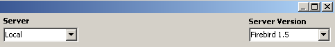
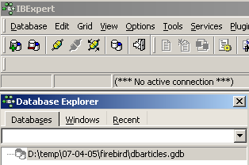
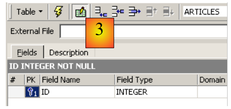
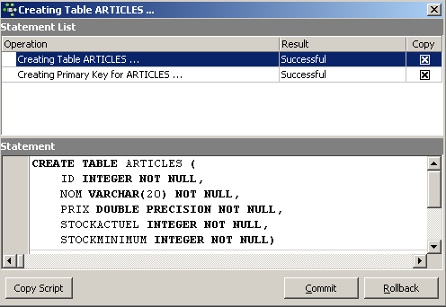
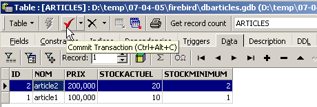
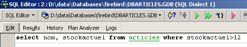
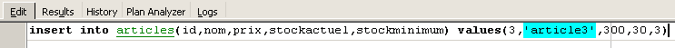

2. Tutoriel Firebird
Avant d'aborder les bases du langage SQL, nous présentons au lecteur comment installer le SGBD Firebird ainsi que le client graphique IB-Expert.
2.1. Où trouver Firebird ?
Le site principal de Firebird est [http://firebird.sourceforge.net/]. La page de téléchargements offre les liens suivants (avril 2005) :

On téléchargera les éléments suivants :
le SGBD pour Windows | |
une bibliothèque de classes pour les applications .NET qui permet d'accéder au SGBD sans passer par un pilote ODBC. | |
le pilote ODBC de Firebird |
Faire l'installation de ces éléments. Le SGBD est installé dans un dossier dont le contenu est analogue au suivant :
 |
Les binaires sont dans le dossier [bin] :
 |
permet de lancer/arrêter le SGBD | |
client ligne permettant de gérer des bases de données |
On notera que par défaut, l'administrateur du SGBD s'appelle [SYSDBA] et son mot de passe est [masterkey]. Des menus ont été installés dans [Démarrer] :

L'option [Firebird Guardian] permet de lancer/arrêter le SGBD. Après le lancement, l'icône du SGBD reste dans la barre des tâches de windows :
 |
Pour créer et exploiter des bases de données Firebird avec le client ligne [isql.exe], il est nécessaire de lire la documentation livrée avec le produit dans le dossier [doc].
2.2. La documentation de Firebird
La documentation sur Firebird et sur le langage SQL peut être trouvée sur le site de Firebird (janvier 2006) :

Divers manuels sont disponibles en anglais :
pour démarrer avec FB | |
pour comprendre les codes d'erreur renvoyés par FB |
Des manuels de formation au langage SQL sont également disponibles :

pour découvrir comment créer des tables, quels types de données sont utilisables, ... | |
le guide de référence pour apprendre SQL avec Firebird |
Une façon rapide de travailler avec Firebird et d'apprendre le langage SQL est d'utiliser un client graphique. Un tel client est IB-Expert décrit au paragraphe suivant.
2.3. Travailler avec le SGBD Firebird grâce à IB-Expert
Le site principal de IB-Expert est [http://www.ibexpert.com/]. La page de téléchargements offre les liens suivants :

On choisira la version libre [Personal Edition]. Une fois celle-ci téléchargée et installée, on dispose d'un dossier analogue au suivant :

L'exécutable est [ibexpert.exe]. Un raccourci est normalement disponible dans le menu [Démarrer] :

Une fois lancé, IBExpert affiche la fenêtre suivante :

Utilisons l'option [Database/Create Database] pour créer une base de données :
peut être [local] ou [remote]. Ici notre serveur est sur la même machine que [IBExpert]. On choisit donc [local] | |
utiliser le bouton de type [dossier] du combo pour désigner le fichier de la base. Firebird met toute la base dans un unique fichier. C'est l'un de ses atouts. On transporte la base d'un poste à l'autre par simple copie du fichier. Le suffixe [.gdb] est ajouté automatiquement. | |
SYSDBA est l'administrateur par défaut des distributions actuelles de Firebird | |
masterkey est le mot de passe de l'administrateur SYSDBA des distributions actuelles de Firebird | |
le dialecte SQL à utiliser | |
si la case est cochée, IBExpert présentera un lien vers la base créée après avoir créé celle-ci |
Si en cliquant le bouton [OK] de création, vous obtenez l'avertissement suivant :

c'est que vous n'avez pas lancé Firebird. Lancez-le. On obtient une nouvelle fenêtre :

Famille de caractères à utiliser. Bien que la copie d'écran ci-dessus n'indique aucune information, il est conseillé de prendre dans la liste déroulante la famille [ISO-8859-1] qui permet d'utiliser les caractères latins accentués. |
[IBExpert] est capable de gérer différents SGBD dérivés d'Interbase. Prendre la version de Firebird que vous avez installée :  |
Une fois cette nouvelle fenêtre validée par [Register], on a le résultat suivant :

Pour avoir accès à la base créée, il suffit de double-cliquer sur son lien. IBExpert expose alors une arborescence donnant accès aux propriétés de la base :

2.4. Création d'une table de données
Créons une table. On clique droit sur [Tables] (cf fenêtre ci-dessus) et on prend l'option [New Table]. On obtient la fenêtre de définition des propriétés de la table :
 |
Commençons par donner le nom [ARTICLES] à la table en utilisant la zone de saisie [1] :
 |
Utilisons la zone de saisie [2] pour définir une clé primaire [ID] :
 |
Un champ est fait clé primaire par un double-clic sur la zone [PK] (Primary Key) du champ. Ajoutons des champs avec le bouton situé au-dessus de [3] :

Tant qu'on n'a pas " compilé " notre définition, la table n'est pas créée. Utilisons le bouton [Compile] ci-dessus pour terminer la définition de la table. IBExpert prépare les requêtes SQL de génération de la table et demande confirmation :

De façon intéressante, IBExpert affiche les requêtes SQL qu'il a exécutées. Cela permet un apprentissage à la fois du langage SQL mais également du dialecte SQL éventuellement propriétaire utilisé. Le bouton [Commit] permet de valider la transaction en cours, [Rollback] de l'annuler. Ici on l'accepte par [Commit]. Ceci fait, IBExpert ajoute la table créée, à l'arborescence de notre base de données :

En double-cliquant sur la table, on a accès à ses propriétés :

Le panneau [Constraints] nous permet d'ajouter de nouvelles contraintes d'intégrité à la table. Ouvrons-le :

On retrouve la contrainte de clé primaire que nous avons créée. On peut ajouter d'autres contraintes :
- des clés étrangères [Foreign Keys]
- des contraintes d'intégrité de champs [Checks]
- des contraintes d'unicité de champs [Uniques]
Indiquons que :
- les champs [ID, PRIX, STOCKACTUEL, STOKMINIMUM] doivent être >0
- le champ [NOM] doit être non vide et unique
Ouvrons le panneau [Checks] et cliquons droit dans son espace de définition des contraintes pour ajouter une nouvelle contrainte :

Définissons les contraintes souhaitées :

On notera ci-dessus, que la contrainte [NOM<>''] utilise deux apostrophes et non des guillemets. Compilons ces contraintes avec le bouton [Compile] ci-dessus :

Là encore, IBExpert fait preuve de pédagogie en indiquant les requêtes SQL qu'il a exécutées. Passons maintenant au panneau [Constraints/Uniques] pour indiquer que le nom doit être unique. Cela signifie qu'on ne peut pas avoir deux fois le même nom dans la table.

Définissons la contrainte :

Puis compilons-la. Ceci fait, ouvrons le panneau [DDL] (Data Definition Language) de la table [ARTICLES] :

Celui-ci donne le code SQL de génération de la table avec toutes ses contraintes. On peut sauvegarder ce code dans un script afin de le rejouer ultérieurement :
SET SQL DIALECT 3;
SET NAMES NONE;
CREATE TABLE ARTICLES (
ID INTEGER NOT NULL,
NOM VARCHAR(20) NOT NULL,
PRIX DOUBLE PRECISION NOT NULL,
STOCKACTUEL INTEGER NOT NULL,
STOCKMINIMUM INTEGER NOT NULL
);
ALTER TABLE ARTICLES ADD CONSTRAINT CHK_ID check (ID>0);
ALTER TABLE ARTICLES ADD CONSTRAINT CHK_PRIX check (PRIX>0);
ALTER TABLE ARTICLES ADD CONSTRAINT CHK_STOCKACTUEL check (STOCKACTUEL>0);
ALTER TABLE ARTICLES ADD CONSTRAINT CHK_STOCKMINIMUM check (STOCKMINIMUM>0);
ALTER TABLE ARTICLES ADD CONSTRAINT CHK_NOM check (NOM<>'');
ALTER TABLE ARTICLES ADD CONSTRAINT UNQ_NOM UNIQUE (NOM);
ALTER TABLE ARTICLES ADD CONSTRAINT PK_ARTICLES PRIMARY KEY (ID);
2.5. Insertion de données dans une table
Il est maintenant temps de mettre des données dans la table [ARTICLES]. Pour cela, utilisons son panneau [Data] :

Les données sont entrées par un double-clic sur les champs de saisie de chaque ligne de la table. Une nouvelle ligne est ajoutée avec le bouton [+], une ligne supprimée avec le bouton [-]. Ces opérations se font dans une transaction qui est validée par le bouton [Commit Transaction] (cf ci-dessus). Sans cette validation, les données seront perdues.
2.6. L'éditeur SQL de [IB-Expert]
Le langage SQL (Structured Query Language) permet à un utilisateur de :
- créer des tables en précisant le type de données qu'elle va stocker, les contraintes que ces données doivent vérifier
- d'y insérer des données
- d'en modifier certaines
- d'en supprimer d'autres
- d'en exploiter le contenu pour obtenir des informations
- ...
IBExpert permet à un utilisateur de faire les opérations 1 à 4 de façon graphique. Nous venons de le voir. Lorsque la base contient de nombreuses tables avec chacune des centaines de lignes, on a besoin de renseignements difficiles à obtenir visuellement. Supposons par exemple qu'un magasin virtuel sur le web ait des milliers d'acheteurs par mois. Tous les achats sont enregistrés dans une base de données. Au bout de six mois, on découvre qu'un produit « X » est défaillant. On souhaite contacter toutes les personnes qui l'ont acheté afin qu'elles renvoient le produit pour un échange gratuit. Comment trouver les adresses de ces acheteurs ?
- On peut consulter visuellement toutes les tables et chercher ces acheteurs. Cela prendra quelques heures.
- On peut émettre un ordre SQL qui va donner la liste de ces personnes en quelques secondes
Le langage SQL est utile dès
- que la quantité de données dans les tables est importante
- qu'il y a beaucoup de tables liées entre-elles
- que l'information à obtenir est répartie sur plusieurs tables
- ...
Nous présentons maintenant l'éditeur SQL d'IBExpert. Celui-ci est accesible via l'option [Tools/SQL Editor] ou [F12] :

On a alors accès à un éditeur de requêtes SQL évolué avec lequel on peut jouer des requêtes. Tapons une requête :

On exécute la requête SQL avec le bouton [Execute] ci-dessus. On obtient le résultat suivant :

Ci-dessus, l'onglet [Results] présente la table résultat de l'ordre SQL [Select]. Pour émettre une nouvelle commande SQL, il suffit de revenir sur l'onglet [Edit]. On retrouve alors l'ordre SQL qui a été joué.

Plusieurs boutons de la barre d'outils sont utiles :
- le bouton [New Query] permet de passer à une nouvelle requête SQL :

On obtient alors une page d'édition vierge :

On peut alors taper un nouvel ordre SQL :

et l'exécuter :

Revenons sur l'onglet [Edit]. Les différents ordre SQL émis sont méorisés par [IB-xpert]. Le bouton [Previous Query] permet de revenir à un ordre SQL émis antérieurement :

On revient alors à la requête précédente :

Le bouton [Next Query] permet lui d'aller à l'ordre SQL suivant :

On retrouve alors l'ordre SQL qui suit dans la liste des ordres SQL mémorisés :

Le bouton [Delete Query] permet de supprimer un ordre SQL de la liste des ordres mémorisés :

Le bouton [Clear Current Query] permet d'effacer le contenu de l'éditeur pour l'ordre SQL affiché :

Le bouton [Commit] permet de valider définitivement les modifications faites à la base de données :

Le bouton [RollBack] permet d'annuler les modifications faites à la base depuis le dernier [Commit]. Si aucun [Commit] n'a été fait depuis la connexion à la base, alors ce sont les modifications faites depuis cette connexion qui sont annulées.

Prenons un exemple. Insérons une nouvelle ligne dans la table :

L'ordre SQL est exécuté mais aucun affichage ne se produit. On ne sait pas si l'insertion a eu lieu. Pour le savoir, exécutons l'orde SQL suivant [New Query] :

On obtient [Execute] le résultat suivant :

La ligne a donc bien été insérée. Examinons le contenu de la table d'une autre façon maintenant. Double-cliquons sur la table [ARTICLES] dans l'explorateur de bases :
On obtient la table suivante :

Le bouton fléché ci-dessus permet de rafraîchir la table. Après rafraîchissement, la table ci-dessus ne change pas. On a l'impression que la nouvelle ligne n'a pas été insérée. Revenons à l'éditeur SQL (F12) puis validons l'ordre SQL émis avec le bouton [Commit] :

Ceci fait, revenons sur la table [ARTICLES]. Nous pouvons constater que rien n'a changé même en utilisant le bouton [Refresh] :
Ci-dessus, ouvrons l'onglet [Fields] puis revenons sur l'onglet [Data]. Cette fois-ci la ligne insérée apparaît correctement :

Quand commence l'émission des différents ordres SQL, l'éditeur ouvre ce qu'on appelle une transaction sur la base. Les modifications faites par ces ordres SQL de l'éditeur SQL ne seront visibles que tant qu'on reste dans le même éditeur SQL (on peut en ouvrir plusieurs). Tout se passe comme si l'éditeur SQL travaillait non pas sur la base réelle mais sur une copie qui lui est propre. Dans la réalité, ce n'est pas exactement de cette façon que cela se passe mais cette image peut nous aider à comprendre la notion de transaction. Toutes les modifications apportées à la copie au cours d'une transaction ne seront visibles dans la base réelle que lorsqu'elles auront été validées par un [Commit Transaction]. La transaction courante est alors terminée et une nouvelle transaction commence.
Les modifications apportées au cours d'une transaction peuvent être annulées par une opération appelée [Rollback]. Faisons l'expérience suivante. Commençons une nouvelle transaction (il suffit de faire [Commit] sur la transaction courante) avec l'ordre SQL suivant :

Exécutons cet ordre qui supprime toutes les lignes de la table [ARTICLES], puis exécutons [New Query] le nouvel ordre SQL suivant :

Nous obtenons le résultat suivant :

Toutes les lignes ont été détruites. Rappelons-nous que cela a été fait sur une copie de la table [ARTICLES]. Pour le vérifier, double-cliquons sur la table [ARTICLES] ci-dessous :
et visualisons l'onglet [Data] :

Même en utilisant le bouton [Refresh] ou en passant à l'onglet [Fields] pour revenir ensuite à l'onglet [Data], le contenu ci-dessus ne bouge pas. Ceci a été expliqué. Nous sommes dans une autre transaction qui travaille sur sa propre copie. Maintenant revenons à l'éditeur SQL (F12) et utilisons le bouton [RollBack] pour annuler les suppressions de lignes qui ont été faites :

Confirmation nous est demandée :

Confirmons. L'éditeur SQL confirme que les modifications ont été annulées :

Rejouons la requête SQL ci-dessus pour vérifier. On retrouve les lignes qui avaient été supprimées :

L'opération [Rollback] a ramené la copie sur laquelle travaille l'éditeur SQL, dans l'état où elle était au début de la transaction.